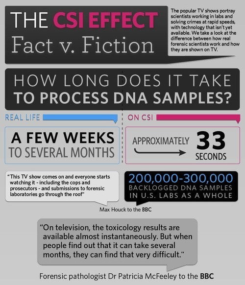
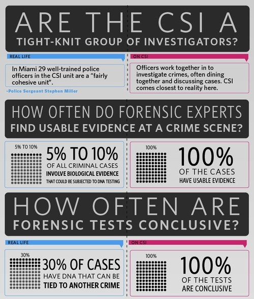

Thu, 19 Aug 2010 14:34:00 · CSI · Science · ForensicScience · Inforgraphic
Infographics: The CSI Effects - Fact vs. Fiction
This cool Infographic is dedicated for all CSI fans out there. Some facts that might as well burst your bubble…
 
To see more awesome Infographic on CSI, go to Forensic Science ~ http://is.gd/eoEJh